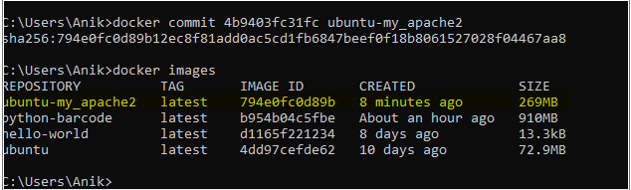
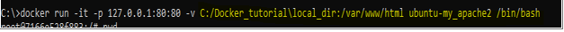
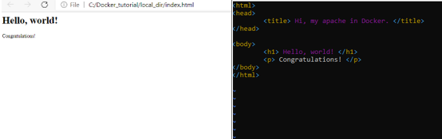
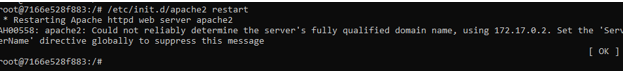
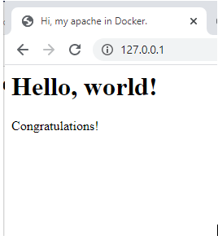

Below you will find a tutorial to guide you through configuring a web server on your local computer with the use of docker. Now follow the instructions below.
Step 1 - Install apache2After following the steps in Linux type in the command below
$ apt- get install apache2
Step 2 - Install the vim text editor
Use the command below to be able to access the vim text editor
$ apt- get install vim
Step 3 - Exit the Ubuntu container
You can exit the ubuntu container by use the command "exit"
Step 4 - Commit the container to create a new containerUse the command below
$ docker pa -a
Create a new docker image with the command mentioned below and check if they are created with "docker images"
$ docker commit 4b9403fc31fc ubuntu-my_apache2

Step 5 - Share Data between Docker & Host
Use the command below which will connect to the direcory of the host computuer and "var/www/htm" is default location for the entry webpage.
$ dockerrun-it-p127.0.0.1:80:80-v C:/Docker_tutorial/local_dir:/var/www/htmlubuntu-my_apache2/bin/bash

Step 6 - VI Editor in UNIX
Create an index.html file the the syntax ""vi index.html" press i and insert the syxtax you want on your webpage. This step will should look like the below screenshots. 
Step 7 - How to use Docker to host a websiteInside your Docker contain, use the command below so you can run an apache server on ubuntu.
$ /etc/init.d/apache2restart

Using a browser of your host computer, type in "127.0.0.1" and you'll be able to see your website.
